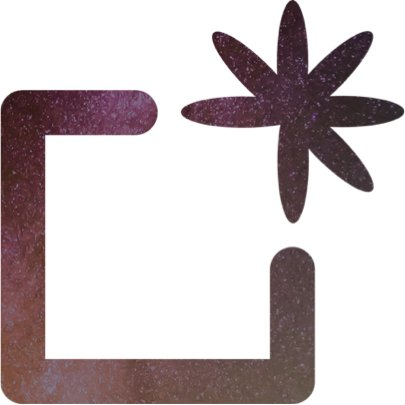

Launched a CrossFit workout tracking app from the ground up — used by gyms across the U.S. Over 60,000 logged scores and 10,000+ workouts. Designed, coded, and scaled the entire platform solo, blending AI features, design systems, and modern Rails + React architecture.

Senior Principal Product Designer
2014-2017
BloomBoard
Initially part of an EdTech innovation R&D team developing productivity tools for professionals. Later led the creation of a new B2B SaaS product—an education tool for teacher credentialing—now used in school districts and higher education institutions nationwide.

Principal Product Designer
2012-2014
Brainspace
Worked on multiple AI and machine learning tools. Contributed to Pure Discovery, a LegalTech tool helping lawyers search massive datasets, and co-created Brainspace, which aggregated global research articles. Both tools were part of a merger and are now known as Reveal Brainspace.

Principal UX Consultant
2010-2012
Improving
Consulted with a range of clients on UX strategy and product development, working across startups and enterprise teams to rapidly prototype, validate, and deliver digital solutions. Known for fast delivery, clean design, and cross-disciplinary collaboration.
Director of User Experience
2010
Medfactory
Led UX strategy and design for a HealthTech SaaS platform focused on physician recruiting and placement. Designed end-to-end experiences for both hospitals and candidates, enabling profile-based search, job discovery, and application workflows. Conducted user research, prototyping, and cross-functional collaboration to accelerate delivery. Helped shape acquisition and conversion strategies while modernizing the B2B and B2C digital experience in a niche healthcare market.
Senior UX Designer & Developer
2008-2010
Metric Interactive - True.com
Led UX and front-end development for True.com, a consumer-facing dating platform, focusing on onboarding, user profiles, and matching experiences. Designed and coded interactive marketing sites, landing pages, and promotional tools for major B2B and B2C clients including Sherwin-Williams, Nokia, Acer, and RadioShack. Delivered component libraries and responsive UIs, enabling faster launches and better engagement. Collaborated cross-functionally in an Agile environment to create user-friendly digital products across diverse industries.
Manager of Brand Content
2007-2008
Hilton Hotels Corp.
Managed Hilton's hotel landing page team, supporting digital content execution across brands like DoubleTree and Embassy Suites. Oversaw web content publishing and alignment with national campaigns, ensuring visual consistency across seasonal promotions and advertising. Served as creative lead and point of contact for custom landing pages, collaborating directly with property stakeholders to reflect local offers and amenities. Introduced themed templates to streamline production and scale content delivery across a high volume of requests.
Senior UX Designer
2005-2007
Hilton Hotels Corp.
Designed and developed custom hotel landing pages to highlight amenities, promotions, and local attractions across Hilton's global brands. Partnered with individual hotel teams to translate marketing goals into rich, interactive content. Created scalable page layouts and integrated light Flash elements to enhance engagement. Supported cross-channel brand marketing efforts by aligning digital deliverables with print and TV campaigns.